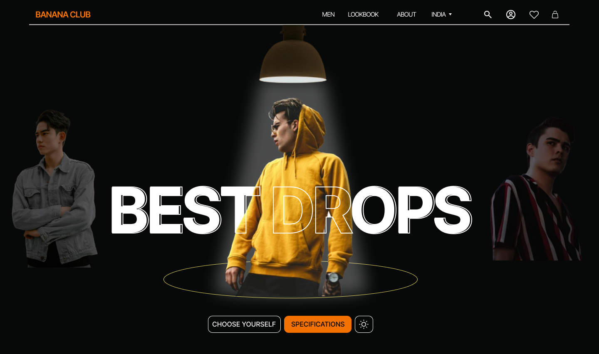
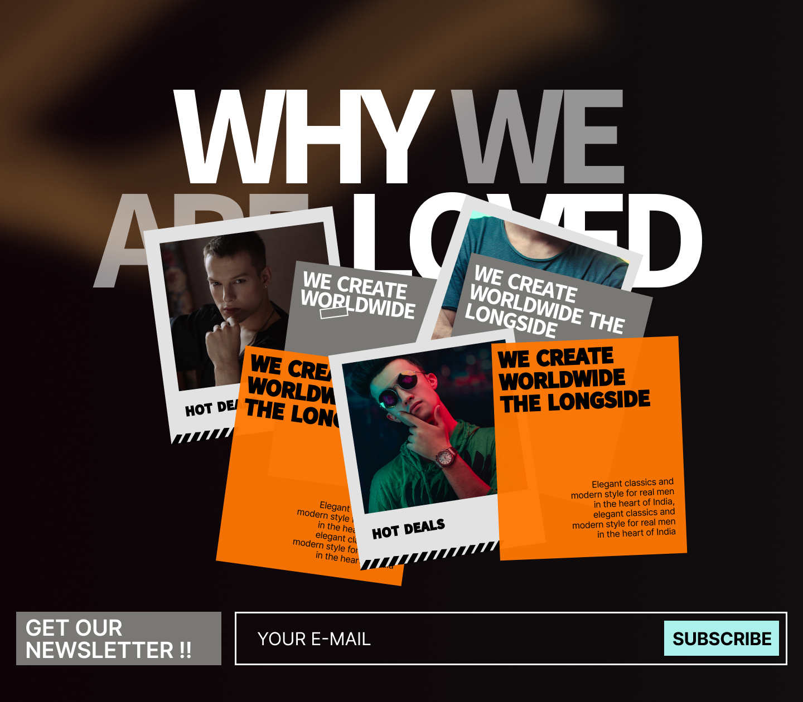

Project: Fashion Website Redesign – Elevating Custom Interaction
A UX/UI Design Case Study
Introduction
In the fast-paced world of fashion e-commerce, engaging users through dynamic and interactive
experiences is key to standing out. This redesign project aimed to transform a conventional fashion
website into an immersive platform where users can explore collections and customize views by
shifting images in any direction, allowing a hands-on interaction with product visuals like never
before.
I led the entire process from user research, wireframing, to final visual design, crafting an
intuitive interface that empowers users to engage deeply with fashion imagery and make confident
style choices.
Problem Statement
Existing fashion websites often lack:
Interactive features that allow users to explore products in detail and personalize their view.
Static image galleries that limit users’ ability to visualize outfits or styles dynamically.
Cluttered interfaces that overwhelm users rather than inspire them.
Poorly optimized user flows that slow down product discovery and decision-making.
These issues reduce engagement and impact conversion rates.
Project Overview
The redesigned fashion website enables users to:
Shift product images horizontally, vertically, or diagonally on a dedicated interaction page.
Zoom, pan, and rotate images seamlessly to examine details and combinations.
Explore curated collections with easy-to-navigate filters and categories.
Save favorite looks and share custom views with friends.
Experience a clean, visually appealing layout optimized for desktop and mobile.
Design Approach
Create a smooth, intuitive interaction for image shifting that feels natural and responsive.
Simplify product discovery with clear, minimal UI controls.
Provide a visually inspiring environment that highlights fashion creativity.
Ensure responsive design for fluid experiences on all devices.
Build seamless user flows from exploration to purchase.
Design Process
1. User Research & Insights
Conducted surveys and interviews with fashion shoppers and stylists to understand pain points and
desired interactive features.
Key insights included the need for more control over product views and clearer visual
storytelling.
2. Wireframing
Developed wireframes outlining:
A dedicated image interaction page with directional shifting controls.
Browsing and filtering interfaces emphasizing product exploration.
Simplified product detail and checkout flows.
3. Prototyping & User Testing
Created interactive prototypes simulating image shifting gestures and gathered user feedback to
refine responsiveness and usability.
4. Visual Design
Employed a sleek, modern aesthetic with bold typography and spacious layouts.
Designed subtle animations for image shifts to enhance user delight without distraction.
Used a neutral color palette to keep focus on product visuals.
Solution Highlights
Innovative image shifting page allowing users to move product images freely in any direction with
touch or mouse drag.
Responsive zoom and pan integrated seamlessly with image shifting.
Clean navigation and filter system supporting easy collection exploration.
User-friendly save and share functions to create personalized style boards.
Impact & Reflections
User engagement with product visuals increased significantly, with over 50% more time spent on the
interaction page.
Positive feedback highlighted how the custom interaction made exploring fashion fun and
intuitive.
Streamlined flows led to faster product discovery and higher add-to-cart rates.
Reflections & Learnings
This redesign deepened my expertise in blending advanced interaction design with clean aesthetics to
elevate user experience in e-commerce. Taking ownership from research through design enabled me to
align the platform closely with user needs, creating an innovative feature that truly sets the
website apart.
I look forward to expanding this interaction into mobile apps and further personalizing
fashion discovery.
UI Design
